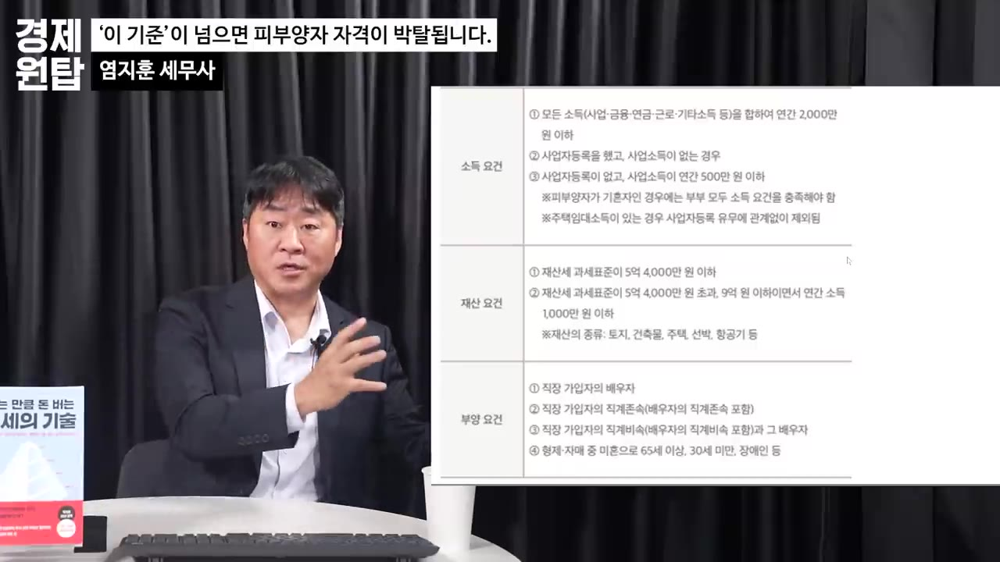
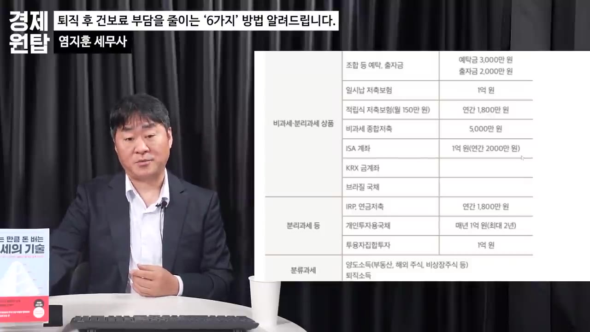

은퇴 후 건보료 폭탄 남일이 아닙니다. '이렇게' 50% 아낄 수 있습니다. ( 염지훈 세무사 )
▶ 원본 영상 보기한눈에 보기
- 연간 소득 합계 2천만 원 초과, 재산세 과세표준 9억 원 초과, 사업소득·주택임대소득이 조금이라도 있으면 건강보험 피부양자 자격을 잃는다고 영상은 설명합니다.
- 퇴직 후 지역가입자가 되면 회사 몫 절반이 없어지고 집 같은 재산에도 점수가 붙어, 국민연금 월 200만 원과 공시가 10억 주택이면 건보료가 월 약 26만 원으로 원천세(약 7만 원)보다 큽니다.
- 가장 중요한 대책은 '임의계속가입 제도'로, 직전 1년 동안 직장에서 내던 수준의 건보료를 3년 더 낼 수 있습니다. 첫 지역 고지서의 납부기한부터 2개월 안에 신청해야 합니다.
- 이 밖에 주택금융부채 공제, 소득·재산 변동 조정 신청, 건보료 산정에서 빠지는 금융상품(비과세종합저축·ISA·연 1,500만 원 이하 연금), 소액 재취업이 대책으로 소개됩니다.
- 건보료만 보면 자산을 부동산에 몰기보다 비과세·분리과세 금융상품, 연금, 주식, 보험으로 나누는 편이 유리하다는 것이 세무사의 주장입니다.
이런 분께 도움이 됩니다
- 1~3년 안에 퇴직을 앞두고 자녀의 피부양자로 들어갈 계획인 직장인
- 퇴직 뒤 지역 건보료 고지서를 받고 놀란 은퇴자, 또는 부모님 건보료를 점검해 드리고 싶은 자녀
핵심 내용
피부양자 자격을 잃는 기준
- 세무사 본인도 4년 전 공무원을 퇴직하면서 피부양자 자격을 잃어 봤다고 말합니다. 저서 『아는 만큼 돈 버는 절세의 기술』 272쪽에 정리되어 있다고 합니다.
- 영상이 든 탈락 조건은 아래 다섯 가지입니다. 하나만 해당해도 탈락하고, 탈락하면 지역가입자로 바뀝니다.
| 조건 | 내용 |
|---|---|
| 소득 | 연간 모든 소득 합계가 2천만 원을 넘으면 무조건 탈락 |
| 재산 | 재산세 과세표준이 9억 원을 넘으면 소득과 관계없이 탈락 |
| 사업자등록 + 사업소득 | 사업자등록이 있으면 사업소득이 만 원만 있어도 탈락 |
| 주택임대소득 | 사업자등록이 없어도 주택임대소득이 조금이라도 있으면 탈락 |
| 배우자 | 배우자에게 위의 소득이 있으면 본인도 탈락 (부부 모두 탈락할 수 있음) |
- 재산세 과세표준은 주택의 경우 일반적으로 공시가격 × 60%입니다. (1:30)
- 임대'소득'은 받은 임대료와 같은 금액이 아닙니다. 월세 30~40만 원(연 약 400만 원)처럼 아주 적은 금액이면 소득이 0 이하로 계산되어 괜찮을 수 있습니다. (2:40)

퇴직 후 건보료가 오히려 오르는 이유
- 직장에 다닐 때는 회사와 근로자가 건보료를 절반씩 냈지만, 지역가입자가 되면 혼자 모두 냅니다. (3:27)
- 지역가입자는 소득뿐 아니라 재산(사는 집 포함)에도 점수가 붙어 건보료가 정해집니다.
- 공시가격이 높은 '똘똘한 한 채'를 가진 사람일수록 부담이 의외로 커집니다. (4:13)
💡 퇴직하면 회사 몫이 없어지고 집값까지 보험료에 반영되기 때문에, 월급이 끊겨도 건보료는 오를 수 있다.
사례: 국민연금 월 200만 원 받는 은퇴자
- 가정은 국민연금 월 200만 원(연 2,400만 원), 1세대 1주택, 공시가격 약 10억 원 주택입니다.
| 항목 | 금액 |
|---|---|
| 국민연금 | 월 200만 원 |
| 지역 건보료 | 약 26만 원 (5:22) |
| 연금 원천징수 세금 | 약 7만 원 |
| 실제 손에 쥐는 돈 | 약 167만 원 (5:45) |
- 자막에는 "매년 내는 지역 건강보험료 26만 원"이라고 나오지만, 200만 원에서 빼서 174만 원이 남는다는 계산으로 보아 월 금액입니다. (자막상 불분명)
- 세금은 7만 원인데 건보료는 26만 원이라는 점이 핵심입니다.
- 집값이 50억 원이라면 건보료가 무한정 늘지는 않지만 의미 있게 커지고, 진행자가 말한 월 50만 원 정도도 "그럴 수 있다"고 답했습니다. (6:08)
💡 퇴직 후에는 건보료가 세금보다 무섭다.
은퇴 자산: 부동산보다 금융자산 분산 (건보료 관점)
- 부동산은 재산세 과세표준만큼 재산 점수를 올립니다. 임대까지 하면 임대소득으로 소득 점수도 올라갑니다. (6:55)
- 비과세·분리과세 금융상품, 주식, 보험으로 나눠 가지면 투자 이익을 얻으면서 건보료도 낮출 수 있다는 주장입니다. (7:20)
- 어르신들은 건보료가 자동이체로 빠져나가 얼마를 내는지 모르는 경우가 많다고 합니다. 세무사의 부모님도 본인보다 훨씬 많이 내고 계셨다고 합니다.
- 건보료를 오래 내다 상속이 생기면 상속세 낼 돈이 모자라 결국 부동산을 파는 경우가 흔하다고 말합니다.
💡 사람마다 다르지만, 길게 보면 부동산에 몰기보다 비과세·분리과세·연금·주식·보험으로 고루 나누는 편이 낫다.
퇴직 후 건보료 줄이는 6가지 방법
- 피부양자 자격 유지: 퇴직 전부터 소득 수준을 피부양자 요건에 맞춥니다. 소득을 없애라는 뜻이 아니라 의미 있는 금융소득 등으로 바꾸라는 뜻입니다. 다만 집 때문에 과세표준이 높으면 억지로 낮출 수 없어 탈락하는 경우가 많다고 합니다. (8:52)
- 임의계속가입 제도 (가장 중요): 직전 1년 동안 회사에서 내던 수준의 건보료를 앞으로 3년 동안 계속 냅니다. (9:38)
- 재산에 붙는 건보료는 내지 않아도 됩니다. 다른 소득이 많으면 그만큼은 더 낼 수 있습니다.
- 신청 기한은 첫 지역가입자 고지서의 납부기한부터 2개월 이내이고, 놓치면 지역가입자로 소득·재산 점수에 따라 냅니다. (10:26)
- 주택금융부채 공제: 1세대 1주택자나 무주택자에게 주택담보대출이나 전세자금대출이 있으면 그 부채만큼 재산 점수를 낮춰 줍니다.
- 공제 한도는 주택담보대출 최대 5천만 원, 전세자금대출 최대 1억 5천만 원입니다.
- 소득·재산 변동 조정 신청: 소득이 갑자기 줄었거나 주택금융부채 공제 대상인 사람이 신청해 건보료를 미리 낮춥니다.
- 건보료 산정에서 빠지는 상품 활용: 이자·배당소득은 원래 건보료 산정에 합산됩니다. 아래 상품은 빠집니다.
- 비과세종합저축: 비과세이면서 건보료 산정에서도 제외됩니다.
- ISA 계좌: 비과세·분리과세로 건보료 대상 소득에서 제외됩니다.
- 연금계좌: 연 1,500만 원 이하로 받으면 분리과세로 끝나 건보료 대상 소득에서 제외됩니다.

- 재취업: 소액·단기 일자리로 직장가입자 자격을 얻으면, 자산이 많을수록 재산에 붙는 지역 건보료를 완전히 피할 수 있습니다. 1년 이상 일한 뒤 퇴직하면 다시 임의계속가입을 신청해 3년 동안 직장 시절 수준으로 낼 수 있습니다.
따라 해보기
준비물
- 최근 1년 동안의 직장 건보료 납부 내역 (급여명세서)
- 본인과 배우자의 연간 소득 내역(연금·이자·배당·사업·임대), 보유 주택의 공시가격
- 주택담보대출이나 전세자금대출이 있으면 대출 서류
- 비용은 없습니다. 신청은 국민건강보험공단을 통해 합니다. (보충)
단계별 방법
🔁 퇴직 전후 건보료 점검 순서
- 피부양자 요건 확인
- 소득 구조 조정
- 첫 지역 고지서 확인
- 임의계속가입 신청
- 부채 공제·조정 신청
- 3년 후 다시 점검
- 1피부양자 요건 확인
본인과 배우자의 연간 소득 합계 2천만 원, 재산세 과세표준(공시가격 × 60%) 9억 원, 사업소득·주택임대소득 여부를 점검합니다. (1:08)
- 2소득 구조 조정
퇴직 전부터 이자·배당을 비과세종합저축, ISA, 연금계좌(연 1,500만 원 이하 수령)로 옮겨 건보료 대상 소득을 줄입니다. (11:58)
- 3첫 지역 고지서 확인
피부양자가 안 되면 지역가입자 첫 고지서를 받습니다. 이 고지서의 납부기한이 임의계속가입 신청 기한의 기준입니다.
- 4임의계속가입 신청
납부기한부터 2개월 안에 신청해 3년 동안 직장 시절 수준으로 냅니다. 신청 창구는 영상에서 생략됨. 공단 지사, 고객센터(1577-1000), 홈페이지에서 신청합니다. (보충) (10:26)
- 5부채 공제·조정 신청
주택담보대출(최대 5천만 원)이나 전세대출(최대 1억 5천만 원)이 있거나 소득이 줄었으면 주택금융부채 공제와 조정 신청을 합니다.
- 63년 후 다시 점검
임의계속가입이 끝나기 전에 소액 재취업 등으로 직장가입자 자격을 다시 얻을지 판단합니다.
따라 할 수 있는지 점검
- ✅ 바로 따라 할 수 있음: 1단계 피부양자 요건 확인, 3단계 첫 고지서 확인
- ⚠️ 4단계 「임의계속가입 신청」: 신청 장소·방법과 가입 자격 요건이 영상에 안 나옴 → 국민건강보험공단 홈페이지에서 '임의계속가입' 검색, 또는 1577-1000에 문의. 일반적으로 퇴직 전 18개월 동안 직장가입 기간이 통산 1년 이상이어야 합니다. (보충)
- ⚠️ 2단계 「소득 구조 조정」: 비과세종합저축은 가입 대상(나이 등)이 정해져 있는데 영상에 안 나옴 → 은행·증권사에서 가입 조건 확인 (보충). 연 1,500만 원 기준이 사적연금(연금저축·IRP)에만 해당하는지도 영상에서 밝히지 않음 → 공단에 확인
- ⚠️ 5단계 「부채 공제·조정 신청」: 신청 서류와 창구가 영상에 안 나옴 → 공단 지사나 고객센터에 '주택금융부채 공제' 문의 (보충)
- ❓ 사례의 건보료 26만 원은 자막에 '매년'으로 나오지만 계산상 월 금액으로 보입니다.
확인 방법
- 임의계속가입이 승인되면 다음 고지서 금액이 직장 시절 본인 부담분과 비슷하게 나와야 합니다. (보충)
- 부채 공제가 적용되면 고지서의 재산 점수(재산 보험료)가 줄어듭니다. (보충)
막히면
- 임의계속가입은 첫 고지서 납부기한부터 2개월이 지나면 신청할 수 없습니다. 세무사가 꼽은 가장 큰 주의점입니다.
- 사업자등록이 있으면 사업소득이 아주 적어도 피부양자에서 탈락하므로, 퇴직 전에 쓰지 않는 사업자등록이 있는지 확인합니다.
- 배우자에게 소득이 있으면 본인 소득이 없어도 탈락할 수 있습니다.
기억할 숫자·인용
- 피부양자 탈락 기준: 연 소득 합계 2천만 원 초과, 재산세 과세표준 9억 원 초과
- 재산세 과세표준 = 주택 공시가격 × 60% (일반적인 경우)
- 연금 월 200만 원 + 공시가 10억 주택 → 건보료 약 26만 원, 원천세 약 7만 원, 실수령 약 167만 원
- 임의계속가입: 직전 1년 수준으로 3년, 신청 기한은 첫 고지서 납부기한부터 2개월
- 주택금융부채 공제: 주택담보대출 최대 5천만 원, 전세자금대출 최대 1억 5천만 원
- 연금계좌 연 1,500만 원 이하 수령 시 분리과세로 건보료 대상 소득에서 제외
- "퇴직 후에는 건강보험료가 세금보다 더 무섭다."
생각해볼 점
- 영상의 기준과 금액은 촬영 시점(2026.10.22)의 세무사 설명입니다. 건보료 부과 기준은 자주 바뀌므로 실제 적용 전에 국민건강보험공단에서 본인 기준으로 확인하는 것이 안전합니다. (내 의견)
- 26만 원 사례는 세무사가 직접 계산한 값이라 산식이 공개되지 않았습니다. 공단의 '지역보험료 모의계산'으로 본인 조건을 넣어 확인해 볼 만합니다. (내 의견)
- "부동산보다 금융자산 분산이 유리하다"는 건보료 한 가지만 본 주장입니다. 세무사도 사람마다 선호와 상황이 다르다고 말했으므로 수익률, 안정성, 주거 필요를 함께 따져야 합니다.
바로 해볼 일
- 본인(또는 부모님)의 최근 건보료 고지서를 꺼내 소득 보험료와 재산 보험료가 각각 얼마인지 확인하기
- 집 공시가격 × 60%를 계산해 9억 원 기준과 비교하고, 배우자 소득까지 더해 2천만 원 기준 점검하기
- 퇴직 예정이면 '임의계속가입 신청 기한 = 첫 고지서 납부기한부터 2개월'을 달력에 미리 표시하기